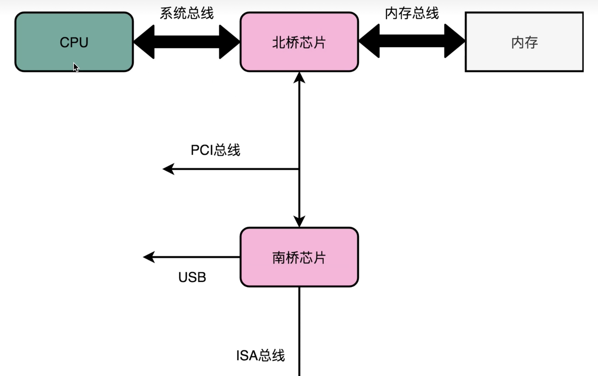

Java I/O 入门：文件字节流的读写与关闭
Java I/O
I/O简而言之，就是输入输出,读取硬盘上的文件，网络文件传输，鼠标键盘输入，也可以是接受单片机发回的数据，而能够支持这些操作的设备就是I/O设备。

常见的I/O设备一般是鼠标、键盘这类通过USB进行传输的外设或者是通过Sata接口或是M.2连接的硬盘。一般情况下，这些设备是由CPU发出指令通过南桥芯片间接进行控制，而不是由CPU直接操作。
硬盘只能存储一个个0和1这样的二进制数据，至于0和1如何排列，各自又代表什么意思，就是由操作系统的文件系统来决定的。
JDK提供了一套用于IO操作的框架，为了方便我们开发者使用，就定义了一个像水流一样，根据流的传输方向和读取单位，分为字节流InputStream和OutputStream以及字符流Reader和Writer的IO框架
这里的流指的是数据流，通过流，我们就可以一直从流中读取数据，直到读取到尽头，或是不断向其中写入数据，直到我们写入完成，而这类IO就是我们所说的BIO，
文件字节流
FileInputStream，我们可以通过它来获取文件的输入流：
public static void main(String[] args) {
try { //注意，IO相关操作会有很多影响因素，有可能出现异常，所以需要明确进行处理 FileInputStreaminputStream=newFileInputStream("路径"); //路径支持相对路径和绝对路径
} catch (FileNotFoundException e) {
e.printStackTrace();
}
}
相对路径是在当前运行目录（就是你在哪个目录运行java命令启动Java程序的）的路径下寻找文件，而绝对路径，是从根目录开始寻找。路径分割符支持使用/或是\\，但是不能写为\因为它是转义字符！比如在Windows下：
C://User/lbw/nb 这个就是一个绝对路径，因为是从盘符开始的
test/test 这个就是一个相对路径，因为并不是从盘符开始的，而是一个直接的路径
在Linux和MacOS下：无盘符只有目录
/root/tmp 这个就是一个绝对路径，绝对路径以/开头
test/test 这个就是一个相对路径，不是以/开头的
在JDK1.7新增了try-with-resource语法，用于简化这样的写法（本质上还是和这样的操作一致，只是换了个写法）
public static void main(String[] args) {
//注意，这种语法只支持实现了AutoCloseable接口的类！
try(FileInputStream inputStream = new FileInputStream("路径")) { //直接在try()中定义要在完成之后释放的资源
} catch (IOException e) { //这里变成IOException是因为调用close()可能会出现，而FileNotFoundException是继承自IOException的
e.printStackTrace();
}
//无需再编写finally语句块，因为在最后自动帮我们调用了close()
}
我们可以使用read方法：
Unicode 和 多字节不同的一点 , 可以利用
- ASCII 字符（字母、数字、标点）在 UTF-8 中仍是单字节。
- Unicode 码点 0~127 与 ASCII 完全一致。
- 强制转换
(char)65相当于'\u0041'（即 'A'）。 - 中文多字节无法实现 ; (2 - 3 字节)
java****复制代码
public static void main(String[] args) {
//test.txt：a
try(FileInputStream inputStream = new FileInputStream("test.txt")) {
//使用read()方法进行字符读取
//转化char之前是ASCII数字 ;
System.out.println((char) inputStream.read()); //读取一个字节的数据（英文字母只占1字节，中文占2字节）
System.out.println(inputStream.read()); //唯一一个字节的内容已经读完了，再次读取返回-1表示没有内容了
}catch (IOException e){
e.printStackTrace();
}
}
// while ((tmp = inputStream.read()) != -1){ //通过while循环来一次性读完内容
System.out.println((char)tmp);
使用available方法能查看当前可读的剩余字节数量（注意：并不一定真实的数据量就是这么多，尤其是在网络I/O操作时，这个方法只能进行一个预估也可以说是暂时能一次性可以读取的数量，当然在磁盘IO下，一般情况都是真实的数据量）[网络会存在延迟]
java****复制代码
try(FileInputStream inputStream = new FileInputStream("test.txt")) {
System.out.println(inputStream.available()); //查看剩余数量
}catch (IOException e){
e.printStackTrace();
}
我们可以预置一个合适容量的byte[]数组来存放：[本地靠谱, 网络就算了]
java****复制代码
public static void main(String[] args) {
//test.txt：abcd
try(FileInputStream inputStream = new FileInputStream("test.txt")) {
byte[] bytes = new byte[inputStream.available()]; //我们可以提前准备好合适容量的byte数组来存放,开大了的话会出现乱码
System.out.println(inputStream.read(bytes)); //一次性读取全部内容（返回值是读取的字节数）
System.out.println(new String(bytes)); //通过String(byte[])构造方法得到字符串
}catch (IOException e){
e.printStackTrace();
}
}
控制读取数量 : 注意：一次性读取同单个读取一样，当没有任何数据可读时，依然会返回-1
System.out.println(inputStream.read(bytes, 1, 2)); //第二个参数是从给定数组的哪个位置开始放入内容，第三个参数是读取流中的字节数
通过skip()方法可以跳过指定数量的字节，返回值为实际跳过的字节：
java****复制代码
public static void main(String[] args) {
//test.txt：abcd
try(FileInputStream inputStream = new FileInputStream("test.txt")) {
System.out.println(inputStream.skip(n)); 跳过 n 个字节
System.out.println((char) inputStream.read()); //跳过了一个字节
}catch (IOException e){
e.printStackTrace();
}
}
既然有输入流，那么文件输出流也是必不可少的：
java****复制代码
public static void main(String[] args) {
//输出流也需要在最后调用close()方法，并且同样支持try-with-resource
try(FileOutputStream outputStream = new FileOutputStream("output.txt")) {
//注意：若此文件不存在，会直接创建这个文件！
}catch (IOException e){
e.printStackTrace();
}
}
输出流没有read()操作而是write()操作，使用方法同输入流一样，只不过现在的方向变为我们向文件里写入内容：
java****复制代码
public static void main(String[] args) {
try(FileOutputStream outputStream = new FileOutputStream("output.txt")) {
outputStream.write('c'); //同read一样，可以直接写入内容
outputStream.write("lbwnb".getBytes()); //也可以直接写入byte[]
outputStream.write("lbwnb".getBytes(), 0, 1); //同上输入流
outputStream.flush(); //建议在最后执行一次刷新操作（强制写入）来保证数据正确写入到硬盘文件中
//实际上在close也会执行一次 ;
}catch (IOException e){
e.printStackTrace();
}
}
在文件尾部进行追加写入数据,我们可以调用另一个构造方法来实现：
java****复制代码
public static void main(String[] args) {
try(FileOutputStream outputStream = new FileOutputStream("output.txt", true)) { //true表示开启追加模式
outputStream.write("lb".getBytes()); //现在只会进行追加写入，而不是直接替换原文件内容
outputStream.flush();
}catch (IOException e){
e.printStackTrace();
}
}
利用输入流和输出流，就可以轻松实现文件的拷贝了：
java****复制代码
public static void main(String[] args) {
try(FileOutputStream outputStream = new FileOutputStream("output.txt");
FileInputStream inputStream = new FileInputStream("test.txt")) { //可以写入多个
byte[] bytes = new byte[1024 * 1024]; //使用长度为10的byte[]做传输媒介
int tmp; //存储本地读取字节数
while ((tmp = inputStream.read(bytes)) != -1){ //直到读取完成为止
outputStream.write(bytes, 0, tmp); //写入对应长度的数据到输出流
}
}catch (IOException e){
e.printStackTrace();
}
}